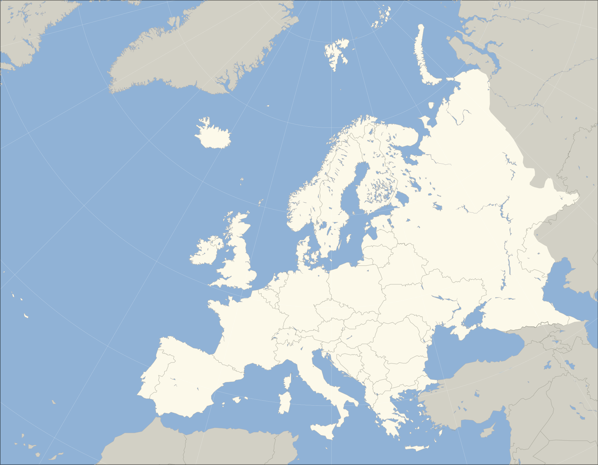

Europe is a continent[t] located entirely in the Northern Hemisphere and mostly in the Eastern Hemisphere. It is bordered by the Arctic Ocean to the north, the Atlantic Ocean to the west, the Mediterranean Sea to the south, and Asia to the east. Europe shares the landmass of Eurasia with Asia, and of Afro-Eurasia with both Asia and Africa.[10][11] Europe is commonly considered to be separated from Asia by the watershed of the Ural Mountains, the Ural River, the Caspian Sea, the Greater Caucasus, the Black Sea, and the waterway of the Bosporus Strait.[12]
.png "Map in Globe of Europe")
The place name Evros was first used by the ancient Greeks to refer to their northernmost province, which bears the same name today. The principal river there – Evros (today's Maritsa) – flows through the fertile valleys of Thrace,[18] which it self was also called Europe, before the term meant the continent.[19]
In classical Greek mythology, Europa (Ancient Greek: Εὐρώπη, Eurṓpē) was a Phoenician princess. One view is that her name derives from the Ancient Greek elements εὐρύς (eurús) 'wide, broad', and ὤψ (ōps, gen. ὠπός, ōpós) 'eye, face, countenance', hence their composite Eurṓpē would mean 'wide-gazing' or 'broad of aspect'.[20][21][22][23] Broad has been an epithet of Earth herself in the reconstructed Proto-Indo-European religion and the poetry devoted to it.[20] An alternative view is that of Robert Beekes, who has argued in favour of a Pre-Indo-European origin for the name, explaining that a derivation from eurus would yield a different toponym than Europa. Beekes has located toponyms related to that of Europa in the territory of ancient Greece, and localities such as that of Europos in ancient Macedonia.[24]
There have been attempts to connect Eurṓpē to a Semitic term for west, this being either Akkadian erebu meaning 'to go down, set' (said of the sun) or Phoenician 'ereb 'evening, west',[25] which is at the origin of Arabic maghreb and Hebrew ma'arav. Martin Litchfield West stated that "phonologically, the match between Europa's name and any form of the Semitic word is very poor",[26] while Beekes considers a connection to Semitic languages improbable.[24]
Most major world languages use words derived from Eurṓpē or Europa to refer to the continent. Chinese, for example, uses the word Ōuzhōu (歐洲/欧洲), which is an abbreviation of the transliterated name Ōuluóbā zhōu (歐羅巴洲) (zhōu means "continent"); a similar Chinese-derived term Ōshū (欧州) is also sometimes used in Japanese such as in the Japanese name of the European Union, Ōshū Rengō (欧州連合), despite the katakana Yōroppa (ヨーロッパ) being more commonly used. In some Turkic languages, the originally Persian name Frangistan ("land of the Franks") is used casually in referring to much of Europe, besides official names such as Avrupa or Evropa.[27]
The prevalent definition of Europe as a geographical term has been in use since the mid-19th century. Europe is taken to be bounded by large bodies of water to the north, west and south; Europe's limits to the east and north-east are usually taken to be the Ural Mountains, the Ural River, and the Caspian Sea; to the south-east, the Caucasus Mountains, the Black Sea, and the waterways connecting the Black Sea to the Mediterranean Sea.[28]
Definitions used for the boundary between Asia and Europe in different periods of history.
A medieval T and O map printed by Günther Zainer in 1472, showing the three continents as domains of the sons of Noah – Asia to Sem (Shem), Europe to Iafeth (Japheth) and Africa to Cham (Ham) Islands are generally grouped with the nearest continental landmass, hence Iceland is considered to be part of Europe, while the nearby island of Greenland is usually assigned to North America, although politically belonging to Denmark. Nevertheless, there are some exceptions based on sociopolitical and cultural differences. Cyprus is closest to Anatolia (or Asia Minor), but is considered part of Europe politically and it is a member state of the EU. Malta was considered an island of North-western Africa for centuries, but now it is considered to be part of Europe as well.[29] "Europe", as used specifically in British English, may also refer to Continental Europe exclusively.[30]
The term "continent" usually implies the physical geography of a large land mass completely or almost completely surrounded by water at its borders. Prior to the adoption of the current convention that includes mountain divides, the border between Europe and Asia had been redefined several times since its first conception in classical antiquity, but always as a series of rivers, seas and straits that were believed to extend an unknown distance east and north from the Mediterranean Sea without the inclusion of any mountain ranges. Cartographer Herman Moll suggested in 1715 Europe was bounded by a series of partly-joined waterways directed towards the Turkish straits, and the Irtysh River draining into the upper part of the Ob River and the Arctic Ocean. In contrast, the present eastern boundary of Europe partially adheres to the Ural and Caucasus Mountains, which is somewhat arbitrary and inconsistent compared to any clear-cut definition of the term "continent".
The current division of Eurasia into two continents now reflects East-West cultural, linguistic and ethnic differences which vary on a spectrum rather than with a sharp dividing line. The geographic border between Europe and Asia does not follow any state boundaries and now only follows a few bodies of water. Turkey is generally considered a transcontinental country divided entirely by water, while Russia and Kazakhstan are only partly divided by waterways. France, the Netherlands, Portugal and Spain are also transcontinental (or more properly, intercontinental, when oceans or large seas are involved) in that their main land areas are in Europe while pockets of their territories are located on other continents separated from Europe by large bodies of water. Spain, for example, has territories south of the Mediterranean Sea—namely, Ceuta and Melilla—which are parts of Africa and share a border with Morocco. According to the current convention, Georgia and Azerbaijan are transcontinental countries where waterways have been completely replaced by mountains as the divide between continents.
